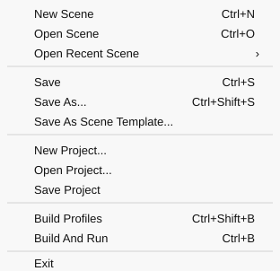
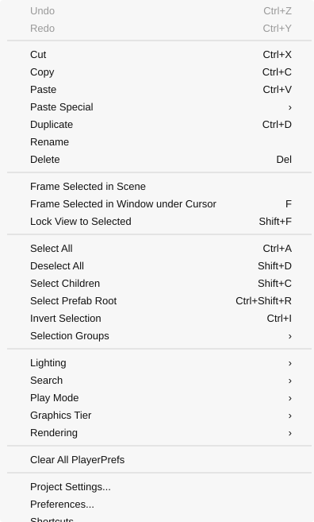
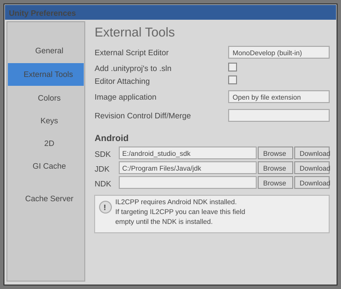
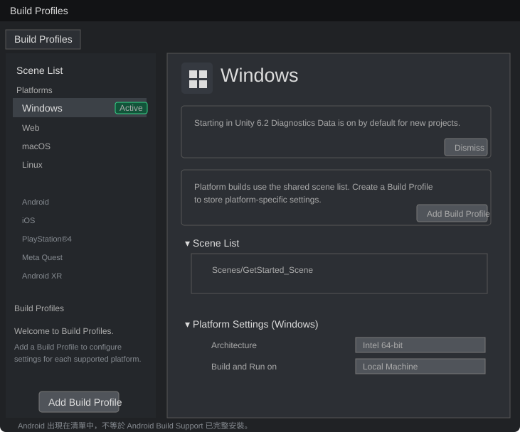
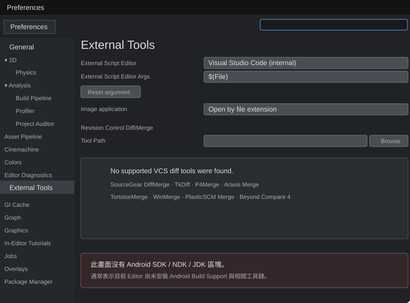
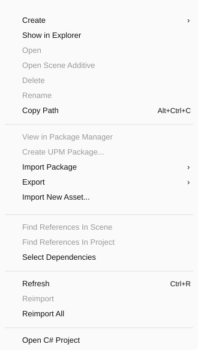
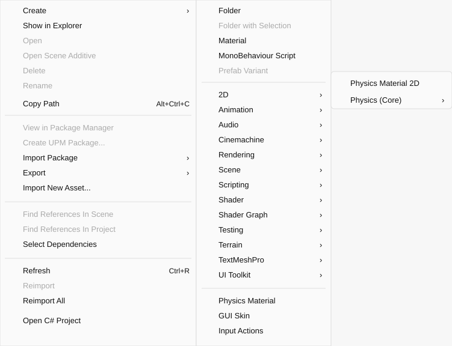
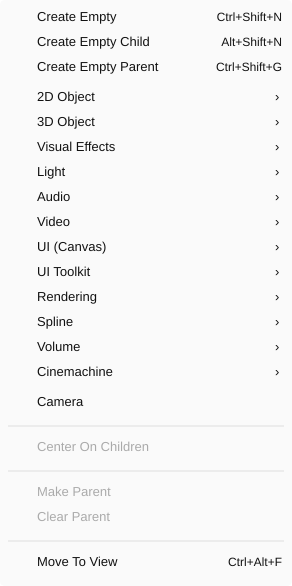

LESSON 05整理中
ch1_2 Unity3D 環境介紹
認識 Unity 的 File、Edit、Assets 與 GameObject 選單，並建立 Asset、GameObject、Component 與 Android 建置工具鏈的基本概念。
File 選單：Scene、Project 與建置
- Save / Save As
- 儲存目前的 Scene；Scene 會以
.unity場景資產存在專案中。 - Save Project
- 儲存專案範圍的資產與設定變更，不應拿來取代目前 Scene 的儲存。
- Build Profiles
- 設定要輸出的目標平台與建置選項，例如 Windows、Web、Android 或其他已安裝支援模組的平台。
- Build And Run
- 建置遊戲，並在完成後直接執行。

Edit 選單與 Preferences
- Cut / Copy / Paste
- 對目前選取的物件或資產進行剪下、複製與貼上；常用快捷鍵分別為
Ctrl+X、Ctrl+C、Ctrl+V。 - Duplicate
- 複製目前選取內容，快捷鍵為
Ctrl+D。 - Project Settings
- 修改目前專案的設定，例如輸入、物理、品質、標籤與平台相關設定。
- Preferences
- 修改這台電腦上 Unity Editor 的個人偏好，例如腳本編輯器、顏色、快取與外部工具。

External Tools：程式編輯器與 Android 工具
- External Script Editor
- 外部腳本編輯器。選擇雙擊 C# 腳本時要開啟的程式。本筆記使用 Visual Studio Code。
- Android 工具的位置
- Unity 6 仍從 Edit → Preferences → External Tools → Android 查看 SDK、NDK、JDK 與 Gradle，並沒有搬到 Build Profiles。
- Build Profile 的作用
- 切換 Android Profile 只會把 Android 設為目前專案的有效建置目標，不是顯示 External Tools Android 區塊的開關。
- Android 區塊的前提
- 目前 Unity Editor 必須先安裝 Android Build Support、Android SDK & NDK Tools 與 OpenJDK。



Android 建置工具名詞
- SDK
- Software Development Kit，軟體開發套件。Android SDK 提供平台 API、建置工具與裝置連線工具，是製作 Android App 所需的基礎工具箱。
- NDK
- Native Development Kit，原生開發套件。你的理解基本正確，它負責 Android 上的 C／C++ 原生程式碼。Unity 使用 IL2CPP 時，即使主要寫 C#，仍可能需要 NDK。
- JDK
- Java Development Kit，Java 開發套件。Android 建置流程依賴 Java 生態工具；這不代表遊戲邏輯必須改用 Java 寫。
- Gradle
- 建置自動化工具。安排編譯、處理相依套件、整合資源，最後封裝成 APK 或 AAB。
- IL2CPP
- Intermediate Language To C++。Unity 的 AOT 編譯後端，將 C# 編譯後的中間語言轉成 C++，再針對目標平台編譯成原生程式。
工具鏈關係C# 可經 IL2CPP 轉成 C++；NDK 編譯原生程式，SDK 提供 Android 平台工具，JDK 與 Gradle 協助完成建置與封裝。
Assets 選單：專案資產與匯入
- Asset
- 專案資產。存在 Project 視窗與
Assets資料夾中的檔案，例如 Scene、Script、Material、Texture、Model、Audio、Prefab 與 Input Actions。 - Assets → Create
- 建立新的專案資產，例如 Folder、Material、MonoBehaviour Script、Physics Material 或 Input Actions。它建立的是檔案或資源，不是場景裡的物件。
- Import Package
- 通常用來匯入
.unitypackage。套件可以包含 C# 腳本、Editor 工具、Prefab、材質、貼圖、模型、音效或 UI 資源；是否算「外掛」取決於裡面的內容。 - Import New Asset
- 把外部檔案匯入目前專案，例如圖片、模型、音訊或其他 Unity 支援的檔案格式。
- Package Manager
- 現代 Unity 安裝官方套件、UPM 套件、Git 套件與部分第三方工具的主要入口。它和匯入傳統
.unitypackage是兩套不同流程。


GameObject 選單：建立場景物件與階層
- GameObject
- 場景物件容器。Hierarchy 裡的每個項目都是 GameObject；它透過附加的 Component 取得外觀與行為。
- 3D Object
- 建立 Cube、Sphere、Capsule、Plane 等常用 3D 場景物件。這些 GameObject 通常會帶有 Mesh、Renderer 與 Collider 等 Component。
- Create Empty
- 建立只有 Transform 的 GameObject。它沒有 Renderer，所以在 Game 視窗中看不到，但仍然是真正的 GameObject，常用來整理階層、當座標基準或掛管理腳本。
- Create Empty Child
- 在目前選取物件之下建立子 GameObject。
- Create Empty Parent
- 替目前選取物件新增一層父 GameObject，方便把多個物件當成群組操作。
- Parent / Child
- 父子關係主要透過 Transform 階層運作。移動、旋轉或縮放父物件通常會連帶影響子物件；修改子物件不會反向改變父物件。

核心區分Assets → Create 建立專案檔案；GameObject 選單建立場景實例。Empty 不是「非 GameObject」，而是沒有可見 Renderer 的 GameObject。
五個主要區塊
Scene編輯場景與擺放物件
Hierarchy管理場景 GameObject 與父子層級
Inspector查看 Component 並修改屬性
Game查看攝影機實際輸出
Project管理圖片、模型、腳本與 Prefab 等 Asset
核心概念
- Asset
- 儲存在專案中的檔案或資源。
- GameObject
- 存在 Scene 與 Hierarchy 中的物件容器。
- Component
- 附加在 GameObject 上，賦予資料、外觀或行為。
- Transform
- 每個 GameObject 都必定擁有，記錄位置、旋轉、縮放與父子階層。
- Prefab
- 可重複使用的 GameObject 結構範本，本身以 Asset 形式存在 Project 中。
- Rigidbody
- 讓 GameObject 受到 Unity 物理系統與重力影響的 Component。
播放控制
- Play
- 執行遊戲。
- Pause
- 暫停目前執行狀態。
- Step
- 逐幀執行，用來觀察每一步變化。
舊版課程提醒
老師畫面中的 Build Settings 在 Unity 6 已改為 Build Profiles；MonoDevelop 也不再是現代 Unity 的主要選擇。Assets → Create 與 GameObject 選單一直代表不同層次：前者建立專案資產，後者建立場景物件，不能因為兩邊都有 Create 就混為一談。